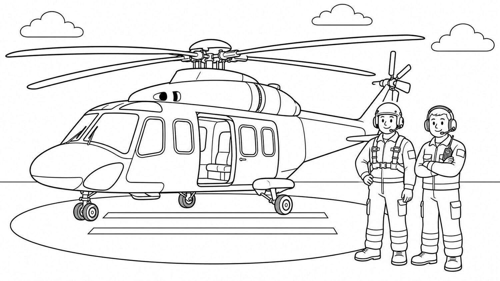

Misericordia di AricciaConfraternita di Misericordia di Ariccia ODV
Bambini · 3-5 anni
Colora l'elicottero del soccorso
3-5 anni🚁 Colora l'elicottero del soccorso e i volontari vicino alla piazzola di atterraggio.

L'elicottero porta aiuto dove le strade non arrivano.